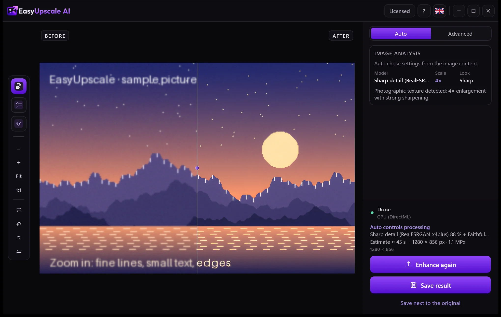
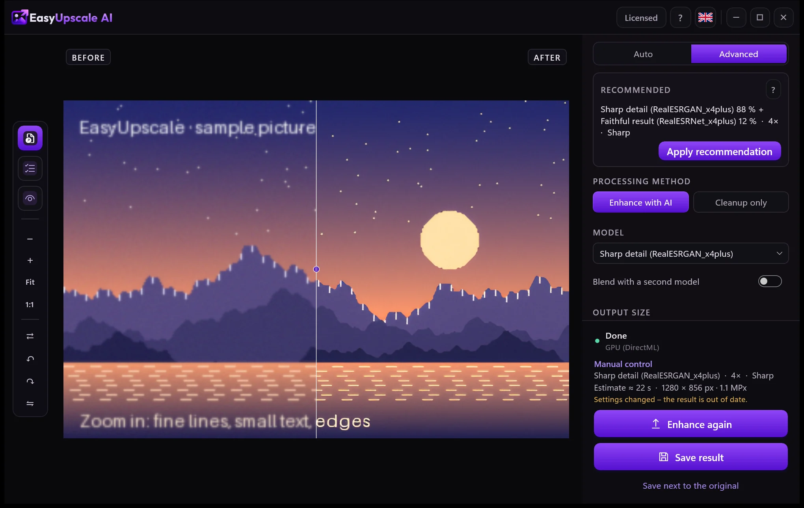
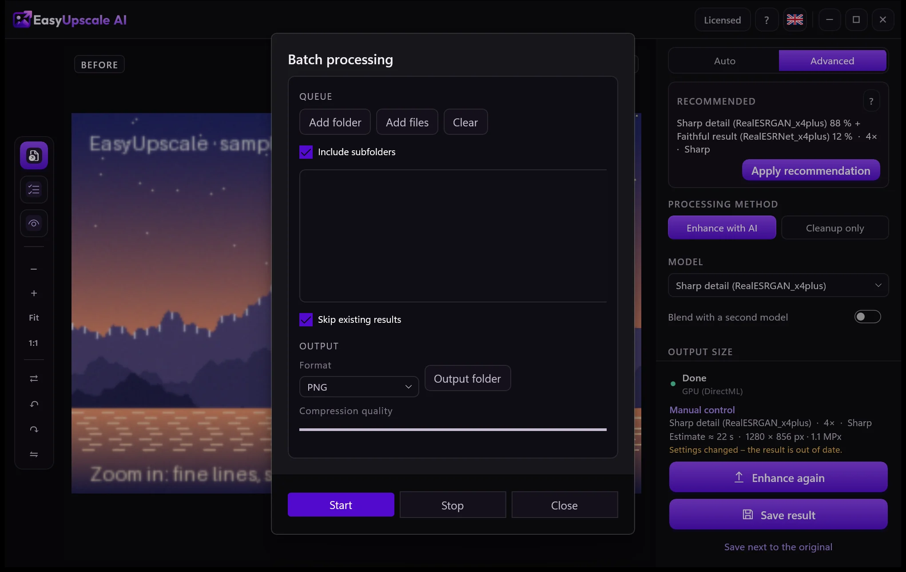
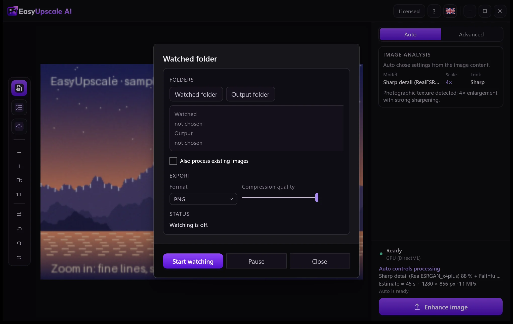

Режим «Авто»
Приложение распознаёт изображение (фото, рисунок, текст, повреждённый снимок) и выбирает модель и размер. Шумные фото сначала очищаются, а потом возвращается мелкое зерно, чтобы результат не выглядел нарисованным.
EasyUpscale AI увеличивает и улучшает изображения с помощью ИИ прямо на вашем компьютере. Без облака, без подписки, без очереди.
Вы можете бесплатно скачать пробную версию и попробовать её. Купите лицензию, если она вам понравится.


В исходном снимке (384 × 256 пикселей) этот фрагмент занимает всего 75 × 50 пикселей. Слева: его настоящие пиксели, в центре: обычное увеличение, справа: EasyUpscale AI (4×).


В режиме «Авто» приложение распознаёт изображение и само выбирает модель, масштаб и вид.
Перетащите фото или целую папку в окно. Или щёлкните по ним правой кнопкой в Проводнике и выберите команду увеличения.
Приложение определяет, что на изображении, и выбирает подходящую модель. Вы видите ход выполнения и можете отменить в любой момент.
Двигайте ползунок, чтобы сравнить оригинал с результатом, и сохраните в PNG, JPEG, WebP, AVIF, TIFF или BMP.

Двигайте линию для сравнения. Исходные снимки всего 384 × 256 пикселей. Слева: обычное увеличение, справа: настоящий результат приложения (модель «Чёткие детали»).


Приложение распознаёт изображение (фото, рисунок, текст, повреждённый снимок) и выбирает модель и размер. Шумные фото сначала очищаются, а потом возвращается мелкое зерно, чтобы результат не выглядел нарисованным.
Выбирайте модель вручную, смешивайте две модели в нужной пропорции и задавайте размер — от 2× и 4× до пресетов вроде 4K или Full HD.
Увеличьте целую папку за один раз. Или укажите папку, где новые изображения будут сами увеличиваться в фоне.
Профили и ползунки для резкости, сглаживания шума и близости к оригиналу. Изменения видны сразу, без нового запуска.
Сохраняет PNG, JPEG, WebP, AVIF, TIFF и BMP. Прозрачность и метаданные сохраняются.
Команда в контекстном меню Проводника, запуск вместе с Windows, светлая и тёмная тема.
Изображения обрабатываются целиком на вашей видеокарте. Ничего не загружается, нет кредитов за изображение и нет очереди.
Единственное, что отправляет приложение, — лицензионный ключ и имя компьютера при проверке лицензии. Без лицензионного ключа оно не подключается к интернету. Подробности — в политике конфиденциальности.
Настоящее окно EasyUpscale AI.



Все функции работают без лицензии. Единственное отличие — водяной знак поверх результата: в предпросмотре он бледнее, в сохранённых файлах заметнее.
Нет. Всё вычисляется на вашем компьютере. Подробности — в разделе «Конфиденциальность».
Ключ активируется один раз через интернет. После этого приложение время от времени незаметно перепроверяет лицензию и работает без подключения до 30 дней после последней проверки. Одна лицензия — один компьютер. Меняя компьютер, снимите активацию в приложении и используйте ключ на новом.
Вы можете отказаться от покупки в течение 14 дней и получить полную стоимость обратно, без объяснения причин. После этого мы возвращаем деньги, если приложение не работает на вашем компьютере и мы не можем это исправить. Приложение также можно сначала попробовать бесплатно. Подробности — в политике возврата.
Простой настольный инструмент. Ваша видеокарта, ваши файлы, ваш результат.